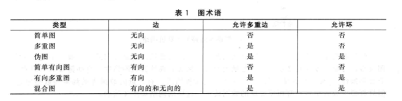
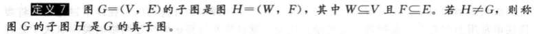
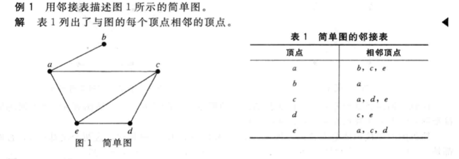
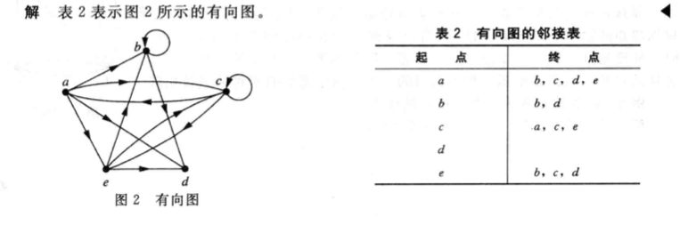
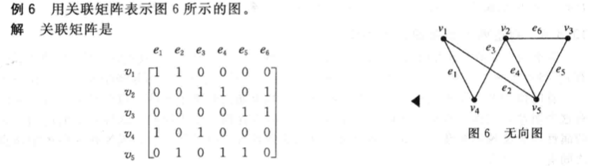
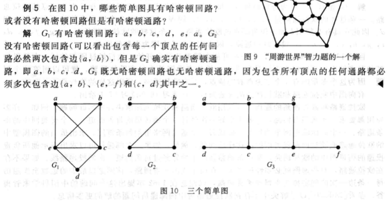

10.1 图和图的模型
定义1
一个图G=(V, E)由顶点的非空集V和边的集合E构成。
每条边有一个或两个顶点与它相连，这样的顶点称为边的端点。
简单图：每条边都连接两个不同的顶点，且没有两条不同的边连接一对相同顶点。
多重图：多重边连接同一对顶点。
环：一条连接顶点自身的边。
伪图：包含环或多重边连接同一对顶点或同一个顶点的图。
定义2
一个有向图(V, E)由一个非空顶点集V和一个有向边（或弧）集E组成。
每条有向边与一个顶点有序对相关联。(u, v)表示有向边开始于u，结束于v。
简单有向图：不包含环和多重有向边的有向图。
有向多重图：vice versa（包含环或多重有向边的有向图）。
多重度：m条有向边与(u, v)关联，则(u, v)是一条多重度为m的边。

10.2 图的术语和几种特殊的图
定义1
邻接：若u和v是无向图G中的一条边e的端点，则称两个顶点u和v在G里邻接（或相邻）。
关联和连接：e称为关联顶点u和v，也可以说边e连接u和v。
定义2
邻居：顶点v的所有相邻顶点的集合N(v)，称为顶点v的邻居。
定义3
度：无向图中，顶点的度是与该顶点相关联的边的数目；但是环作双倍计算，有一个环即度+2。顶点v的度表示为deg(v)。
度为0的顶点是孤立的，度为1的顶点时悬挂的。
定理1
握手定理：G=(V, E)是有m条边的无向图。2m=∑deg(v)
即度的和等于边的两倍。（多重边和环出现时也适用）
⇒无向图顶点的度之和为偶数⇒定理2
定理2
无向图有偶数个度为奇数的顶点。
定义4
(u, v)是带有向边的图G的边，u邻接到v，v从u邻接，顶点u是(u, v)的起点，v是(u, v)的终点。
环的起点和终点相同。
定义5
带有向边的图里，顶点v的入度是deg-(v)，即v为终点的边的数量。顶点v的出度是deg+(v)，是以v为起点的边树；但是环对入度和出度的贡献都是1。
定理3
设G=(V, E)是有向边的图，有∑deg^−^(v)=∑deg^+^(v)=|E|
即所有顶点的入度之和=所有顶点的出度之和=边的数量
完全图：每对不同顶点之间恰好有一条边的简单图。

子图：

10.3 图的表示和图的同构
邻接表：


邻接矩阵：
G=(V, E)，|V|=n。G的顶点任意排列为v1, v2, v3…vn，G的邻接矩阵A是一个n*n的0-1矩阵。当vi和vj相邻时第(i, j)项是1，不相邻时是0。

注意：图的邻接矩阵依赖于所选择的顶点顺序，因此带n个顶点的图有n!个不同的邻接矩阵。
简单图的邻接矩阵是对称。
邻接矩阵也可以用来表示带环和多重边的无向图，环即(i, i)位置上为1，多重边即(i, j)的值为边的数量。也可以用来表示有向图。
关联矩阵：
G=(V, E)是无向图，G的顶点任意排列为v1, v2, v3…vn，边排列为e1, e2, e3…en，则相对于V和E的关联矩阵是n*m的矩阵M。当vi和ej关联时，Mij=1。

图的同构：
设G1=(V1, E1), G2=(V2, E2)都是简单图，若存在一对一的和映上的从V1到V2的函数f，且f对V1中所有的a和b来说，a和b在G1中相邻且仅当f(a)和f(b)在G2中相邻，则G1与G2是同构的，这样的函数f称为同构。两个不同构的简单图称为非同构的。
即两个简单图同构时，两个图的顶点具有保持相邻关系的一一对应。

10.4 连通性
通路：在G中从u到v的长度为n的通路是G的n条边e1, … en的序列。如果一条通路开始和结束在同一顶点，则这样的通路称为回路。
无向图的连通：若无向图中每一对不同顶点之间都有通路，则该图称为连通的。
定理1
在连通无向图的每一对不同顶点之间都存在简单通路。
连通分支：图G的连通分支是G的连通子图。
有向图的连通：
对于有向图中的任意顶点a和b，都有从a到b和从b到a的通路，则该图是强连通的。
在有向图的基本无向图中，任何两个顶点之间都有通路，则该有向图是弱连通的。
10.5 欧拉通路与哈密顿通路
定义1
图G中的欧拉回路是包含G中每一条边的简单回路。图G中的欧拉通路是包含G中每一条边的简单通路。

定理1
含有至少2个顶点的连通多重图具有欧拉回路当且仅当它的每个顶点的度数都为偶数。
定理2
连通多重图具有欧拉通路但无欧拉回路当且仅当它恰好有2个度为奇数的顶点。
定义2
图G中的哈密顿通路是经过每一个顶点恰好一次的简单通路，哈密顿回路是经过每一个顶点恰好一次的简单回路。

定理3
狄拉克定理：如果G是有n>=3个顶点的简单图，当G中每个顶点的度都至少为n/2，则G有哈密顿回路。
定理4
欧尔定理：如果G是有n>=3个顶点的简单图，当G中每一对不相邻的顶点u和v有deg(u)+deg(v)>=n，则G有哈密顿回路。
10.6 最短通路问题
加权图：给每条边赋上一个数的图。
Dijkstra算法：
https://zhuanlan.zhihu.com/p/40338107
https://blog.csdn.net/yalishadaa/article/details/55827681
10.7 平面图
定义1
若可以在平面中画出一个图而边没有任何交叉，则这个图是平面图，这种画法成为这个图的平面表示。

定理1
欧拉公式：设G是带e条边和v个顶点的连通平面简单图。设r是G的平面图表示中的面数，则r=e-v+2。
推论1
若G是e条边和v个顶点的连通平面简单图，其中v>=3，则e<=3v-6。
推论2
若G是连通平面简单图，则G中有度数不超过5的顶点。
推论3
若连通平面简单图有e条边和v个顶点，v>=3并且没有长度为3的回路，则e<=2v-4。